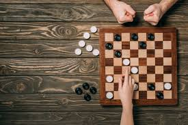

World Checkers Championship
The World Checkers Championship is one of the oldest championship for checkers starting all the wa back in the 1840s.
there are two types of games: 3-move, where the players start 3 turns in; and GAYP(Go-As-You_please), the normal game.
The country that won the most in men championship is Scotland with 21 wins.